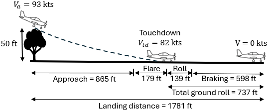

Landing#
This section performs landing analysis for the example airplane using the method described in Raymer Section 17.9. Similar to takeoff, the landing analysis is divided into four parts - approach distance, flare distance, free roll, and braking distance. Refer to Figure 17.19 in Raymer for a visual depiction of these phases. Hence, total landing distance \(S_l\) is defined as
where \(S_{a}\) is the approach distance, \(S_f\) is the flare distance, \(S_{fr}\) is the horizontal distance covered during free roll, and \(S_b\) is the braking distance. Note that the total landing ground roll distance \(S_{gr}\) will be summation of \(S_{fr}\) and \(S_b\). The following sub-sections compute the distance traveled in each phase.
Approach#
The approach phase starts from obstacle clearance height \(h_{obs}\) above the runway and continues till the start of flare. The horizontal distance covered during approach can be computed as (equation 17.112, Raymer)
where \(h_f\) is the flare height. The approach anlge \(\gamma_a\) is usually \(3^{\circ}\) for a passenger airplane. Note that maintaining \(\gamma_a\) of \(3^{\circ}\) might require more than idle thrust. The \(h_{obs}\) is 50 ft for the example airplane (FAR Part 23). The \(h_f\) is computed using
where \(R\) is the radius of the circular arc that approximates the flare phase. The \(R\) is computed using
where \(V_f\) is the average speed during flare and is usually 1.23 times the stall speed. Note that the stall speed is computed in landing configuration. The landing weight is set to 95% of the maximum takeoff weight, while the \(C_{L_{max_L}}\) is 2.2.
Below code block computes appraoch distance \(S_a\):
import numpy as np
# Parameters
W_loading = 0.95 * 5374 # lbs
Sref = 134 # sq ft
rho = 0.00237717 # slugs/cu ft, sea-level
CLmax_L = 2.2
g = 32.2 # ft/s^2
gamma_approach = 3 # deg
hobs = 50 # ft
Vf = 1.23 * ( W_loading/Sref * 2 / rho / CLmax_L)**0.5
Va = 1.3 * ( W_loading/Sref * 2 / rho / CLmax_L)**0.5
print(f"Approach speed: {Va:.0f} ft/s")
print(f"Average flare speed: {Vf:.0f} ft/s")
R = Vf**2 / 0.2 / g
hf = R * (1 - np.cos(np.radians(gamma_approach)))
print(f"Flare height: {hf:.0f} ft")
Sa = (hobs - hf) / np.tan(np.radians(gamma_approach))
print(f"Approach distance: {Sa:.0f} ft")
Approach speed: 157 ft/s
Average flare speed: 148 ft/s
Flare height: 5 ft
Approach distance: 865 ft
Flare#
During flare, airplane transitions from stable decent angle by pitching the nose up and decelerating from approach speed \(V_a\) to touchdown speed \(V_{td}\) (usually 1.15 times stall speed). Hence, the average speed during flare is 1.23 times stall speed. The horizontal distance covered during flare is computed using
Below code block computes the flare distance:
Sf = R * np.sin(np.radians(gamma_approach))
print(f"Flare distance: {Sf:.0f} ft")
Flare distance: 179 ft
Free roll#
The distance covered during free roll \(S_{fr}\) depends on how quickly pilots apply brake after touchdown. The \(S_{fr}\) can be estimated using the touchdown speed and time for free roll, assuming that there is no deceleration in this phase. It is assumed that it takes about 1 seccond before brakes are applied. Below code block computes \(S_{fr}\):
Vtd = Vf / 1.23 * 1.15 # ft/s
t_free_roll = 1 # sec
Sfr = Vtd * t_free_roll # ft
print(f"Touchdown speed: {Vtd:.0f} ft/s")
print(f"Distance travelled during free roll: {Sfr:.0f} ft")
Touchdown speed: 139 ft/s
Distance travelled during free roll: 139 ft
Braking distance#
The braking distance \(S_b\) can be calculated similar to ground roll in takeoff analysis. Using equation 17.102 in Raymer, the \(S_b\) can be computed as
where \(K_a\) and \(K_t\) are defined as (equation 17.103 and 17.104, Raymer)
The \(\mu\) is the rolling resistance coefficient with brakes applied, \(C_L\) is the lift coefficient based on the angle of attack experienced by the plane on ground, and \(C_{D_0}\) is the parasitic drag coefficient in landing configuration. Note that, in the above formula, \(K_t\) is for zero thrust only.
Below code block computes braking distance and total ground roll:
A = 8
e = 0.81 - 0.1 # in landing conditions
mu = 0.5 # Raymer Table 17.1, with brakes
CD0 = 0.03363 + 0.048074 # landing conditions
CL = 0.9 # Landing lift curve with wing incidence of 2 deg
# K in drag model
K = 1/np.pi/A/e
h = 4 # ft, height of wing above ground
b = 33 # ft, wing span
Keff = K * ( 33 * (h/b)**1.5 / ( 1 + 33 * (h/b)**1.5 ) ) # eq 12.60, Raymer
# braking distance distance
KT = - mu # zero thrust
KA = rho / 2 / W_loading / Sref * (mu*CL - CD0 - Keff*CL**2)
Sb = np.log( KT / (KT + KA*Vtd**2) ) / 2 / g / KA
print(f"Braking distance: {Sb:.0f} ft")
Braking distance: 598 ft
Below code block computes total ground roll and total landing distance:
Sgr = Sb + Sfr
print(f"Total ground roll distance: {Sgr:.0f} ft")
Sl = Sa + Sf + Sfr + Sb
print(f"Total landing distance: {Sl:.0f} ft")
Total ground roll distance: 737 ft
Total landing distance: 1781 ft
Note that the total ground roll distance is less than the required limit of 1500 ft. Below image summarizes the final result from the landing analysis:

This concludes the landing analysis, next section is about climb analysis.